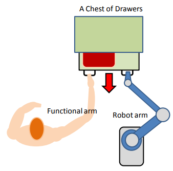
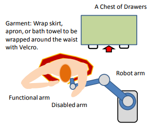
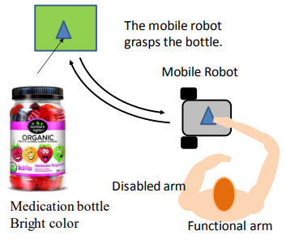
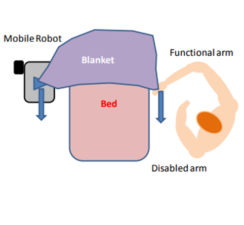
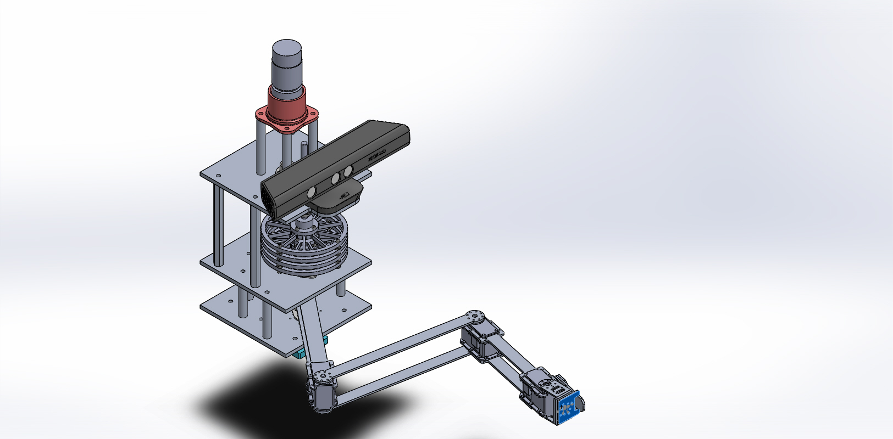
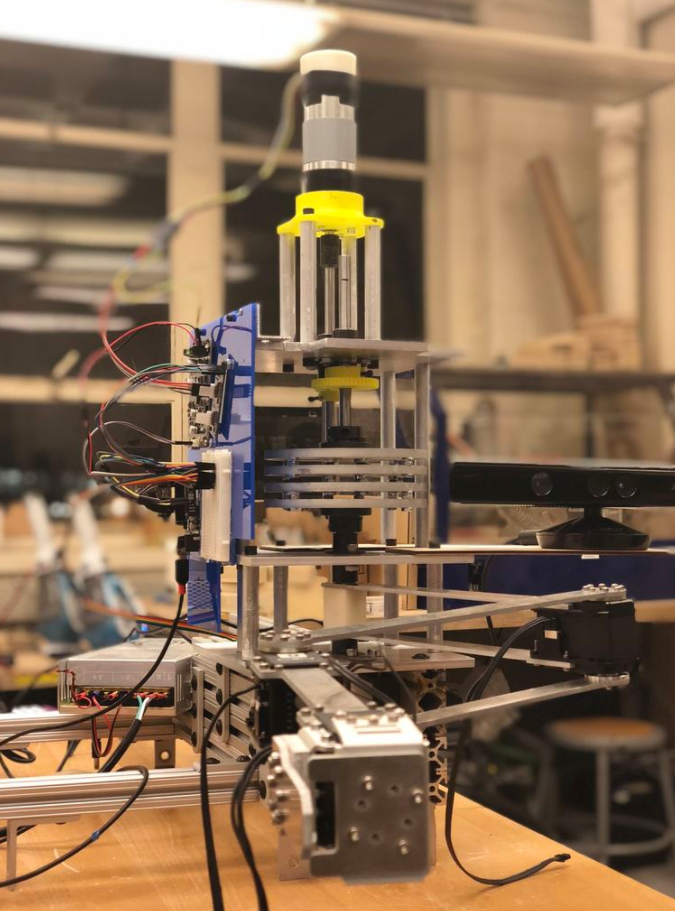
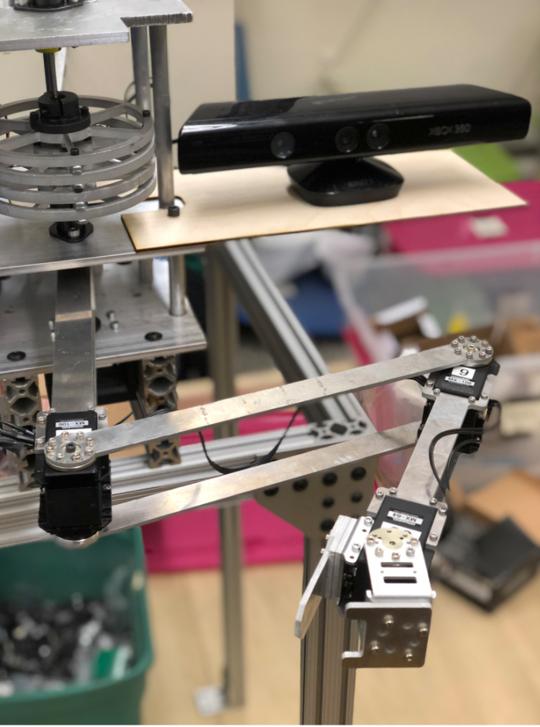
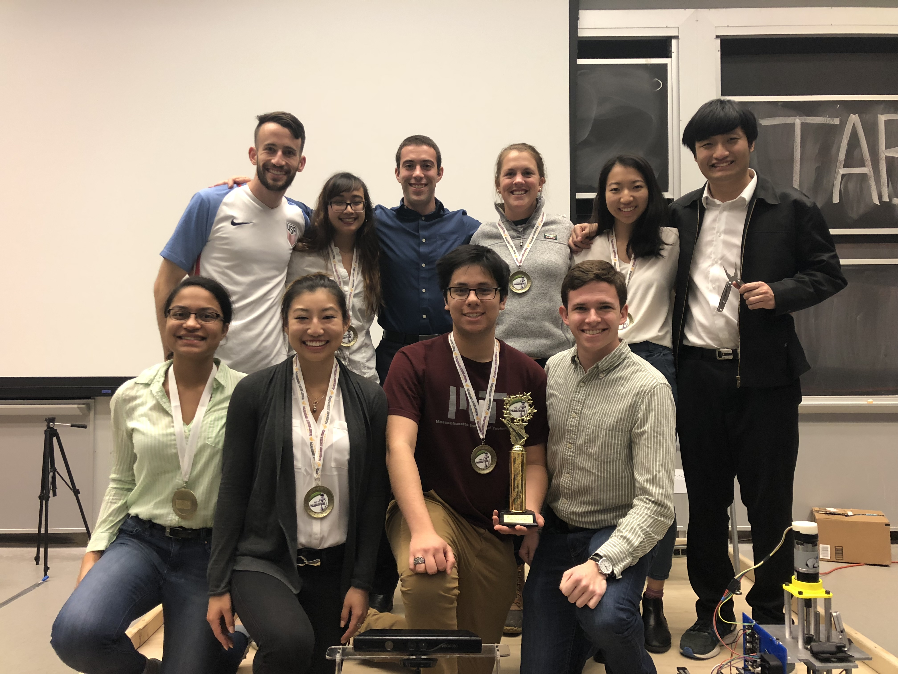

Assistive Robotics for Hemiplegic Patients
About 800,000 people in the US alone experience one or more strokes every year and 80% of the survivors must live with hemiparesis of the limbs contralateral to the brain lesion, ranging from mild weakness to complete paralysis.
Working closely with humans, collaborative robots are capable of detecting and understanding human intentions, reacting to human action, and assisting humans by reducing the work load.
Task A
A robotic arm and a patient sitting side by side jointly open a drawer. The patient takes out a towel that must be wrapped around their waist. The robot holds one corner of the garment, brings it to the waist position of the human, and helps the human secure it with a velcro.


Task B
The patient asks the mobile robot to fetch a medicine bottle. The robot presents the bottle and holds it firmly while the patient is turning the lid with one hand. The robot further assists the patient to make their bed.


The class was divided into six teams of 10-12. Each team was divided into 4 subteams, which consisted of Serial Elastic Actuator (Task A), Robotic Arm (A), Human-Robot Communication & Coordination (A/B), and Vehicle Navigation (B).

My role
- Robotic Arm subteam member
- Design and manufacture the robotic arm and gripper
- Control the robotic arm using ROS to synchronize motion with the patient
- Ensure safety using compliant components and fine-tuning
- Helped manufacture the Serial Elastic Actuator
- Communicated with other subteams to integrate different components such as human-robot communication and the base actuator with the arm
Key Design Features
- Simple gripper and arm designs for ease of manufacturing and reliability
- Grippers design is compatible for both the drawer and towel tasks
- Voice control allowing patient to communicate naturally with the robot
- Four flexture design to add compliance for safety when interacting with patients
- Position and velocity control to accurately grab the handle and synchronize motion with the patient


Results
- Team placed 2nd place overall
- Awarded Most Valuable Engineer of the team by teammates and instructors
